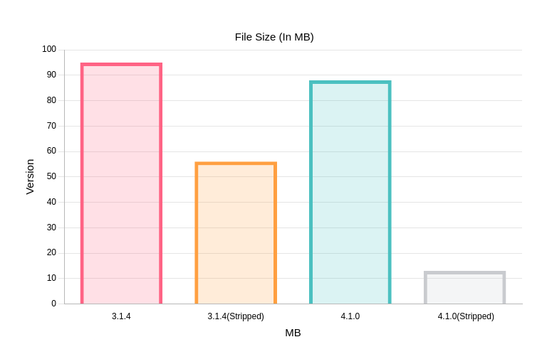
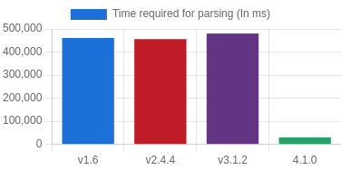
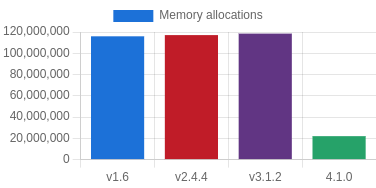
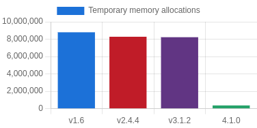
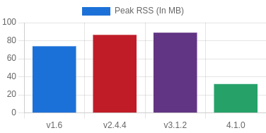
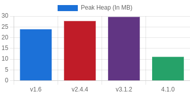
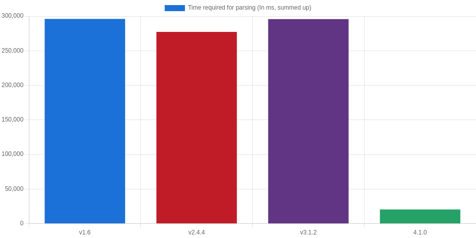

Over the last few months I have rewritten Swift-MesonLSP in C++. In this article, I will outline why I did that, what the benefits are and what the future of Swift-MesonLSP will look like. And I will talk show you a few fancy graphs with comparisons.
As you know, Swift-MesonLSP used the internal LSP Implementation from the Swift language server sourcekit-lsp. After a few refactorings and a lot of effort
to adjust my language server to the API changes, I decided I'm done with it. So let's port it to another library. There is basically only one realistic alternative:
ChimeHQ/LanguageServer I already used SwiftTreeSitter for the bindings to tree-sitter-meson, so I can assume these
are high-quality bindings.
I started porting my language server to this library, but I soon hit the first roadblock: It requires Swift 5.9. Sadly it wasn't possible at this time to only target 5.9, as it isn't available in the Fedora repos (Only 5.8.1). Matt Massicotte helped me by re-adding 5.8 support again (Thanks for that!) You would think that after this roadblock, it would be smooth sailing? Sadly not. I continued with my porting efforts. I made some progress and it even compiled. But then I tried to build the language server in release mode. And the unimaginable: The Swift compiler crashed. But only the Swift compiler in the Fedora repositories showed this behavior. But as I'm bound to the version from there, I again hit a dead end. And then I decided to start the rewrite earlier than planned. (The initial starting date was October 2024)
I'm probably the only person on this earth that took a program in a memory-safe language and rewrote it in a memory unsafe language. Originally I planned to use Rust, but it wasn't compatible with my OOP+Inheritance based architecture. The issues around the Swift version were so pressing it was more important to port to another language than to redesign it. So I again made a list of languages that are viable.
Rust: See above why I didn't pursue it further.
Golang: Has exactly the same issue with e.g. missing inheritance.
Vala: It would close the circle, as my first language server was written in Vala, too. But I personally don't think the language has any future outside of GNOME: In the job market, the number of companies caring about experience are probably some single-digit number.
I discarded all scripting languages (E.g. Python or Typescript), as I personally think rewriting a program and making it slower wouldn't make sense.
So the only language left is: C++. My prior experience with C++ was quite small, I have only interacted with C++ during my studies for three semesters. There is still
the issue of memory-safety, but I think the number of vulnerabilities can be reduced easily by e.g. not doing manual memory-management (With new/delete), using smart
pointers and modern C++. I outlined these design aspects I want to follow (Some are not listed here):
Minimal number of dependencies: In the Swift version, I had the issue that due to me pulling in sourcekit-lsp, I would pull in a lot of other stuff like swift-syntax and a bunch of other stuff I didn't even need. That increased CI times and (probably) increased the binary size (Sadly the entire swift build system is a black box for me, so I just guess it, as it seems like Dead code elimination is somewhat wonky on Linux)
Safety > Performance: I decided to trade performance against safety. Sure if I would do manual memory management, I could probably avoid the overhead from safe pointers and so on, but you can make fewer mistakes, if the compiler/standard library does more than you.
Drop-In binary for Swift-MesonLSP: There is already a small ecosystem around Swift-MesonLSP, so in order to reduce the amount of breakage, the binary should work the same.
Modern C++ with Fedora 39 as baseline: I don't care about old operating systems. (Unless I'm paid to care about them) I want to be able to use the "fancy new stuff". For ancient systems that don't support C++23, I generate a statically linked C++ binary, so that isn't an issue. A lot of stuff from Boost is integrated into the C++ stdlib with every version, so I was even able to avoid the boost libraries as dependencies, thus simplifying distribution.
Furthermore, I created a few goals for me to meet:
Equal/Better performance: Any performance regression would be enough for me to consider this rewrite to be a complete and utter failure. Everybody likes fast stuff, right? And I consider the work of Christian Hergert who is speeding up all those GNOME libraries (GLib, GNOME, GTK) as some sort of motivation. Sure I probably missed a few places where I could improve the performance a lot more, but I'm quite happy with it currently.
Smaller binary: This isn't an entirely fair comparison, as Swift e.g. shipped a few MB of ICU Unicode tables (?) in a statically linked binary, but I wanted to be at least a bit smaller.
Compatibility with gcc and clang: I don't use MSVC, so I only targeted gcc and clang. gcc, as it's the default compiler on Linux and clang due to it being the default compiler on macOS.
Linux/macOS/Windows support: These are the same platforms I support with Swift-MesonLSP and a requirement for vscode-meson.
There are new inlay hints for positional arguments. It can be disabled using the others.disablePosargInlayHints option. Another (disabled by default) option is others.removeDefaultTypesInInlayHints. It reduces the all inlay hints
with types in such format:
any|dict(any)|list(any)|X
to
X
This reduces the clutter, but may show wrong inlay hints in some cases, so use it with caution.
There are two more options for the analysis:
linting.disableUnusedVariableCheck: This allows the user to disable emitting warnings for unused variables. This reduces the wall of warnings for some (auto-generated?) projects that have a lot of unused variables.
linting.disableArgTypeChecking: Sadly the argument types I extracted from the meson source code may be inaccurate. This may cause false-positives. This option allows to disable checking the argument types until the types are fixed.
The last huge change is the introduction of a handwritten parser. It consists of two parts: The lexer is taken (and ported to C++) from muon, the parser is taken from the mesonbuild project. It's faster than the tree-sitter parser and gives better diagnostics.
The first improvement is, that I could finally use a sane build system instead of whatever SPM is. I obviously used CMake as a build system for my meson language server, due to it being the standard build system for C++. Jokes aside, I could finally use meson. Generating code? - Absolutely trivial. Making switching between e.g. memory allocators possible? - Absolutely trivial. The amount of flexibility I gained is absolutely incredible.
Furthermore, I was able to improve my architecture in such a manner that now workspaces can be supported and everything is a lot more maintainable. I separated the language server into a lot of different modules and I control the entire stack. I have my own logging implementation, with the features I want and I have my own JSON-RPC implementation. Something's not working? - Just log all communication. I have my own abstract language server, that allows code reuse. (Maybe GTKCssLanguageServer?) The list of benefits for me is quite long.
The first thing you will probably notice is the improved performance (You will see a few graphs soon). This should be quite noticeable. For reference: Parsing the biggest meson project I know - mesa with 18kLOC meson code - takes ~60ms
to parse and analyze. The amount of resources mesonlsp uses should be reduced, too.
The custom parser is another huge improvement. You should now get better error messages for syntax errors instead of only "Syntax error". And muon isn't needed anymore, as it's statically linked into mesonlsp.
If you used the AUR package or the apt repo, I have bad news. They are discontinued, unless some maintainer is found. It's just too much effort for me to manage those distribution methods. If you use the COPR, uninstall
the Swift-MesonLSP package and install mesonlsp. (Fedora 39/40)
And the auto-completion is still not as good as in other language servers.

The binary size you would get from e.g. the vscode-meson extension only decreased by 8%, as I always ship with full debug info. But if I would distribute stripped binaries, I could have reduced the size by 75%.
As you may know, I started with benchmarking quite early. I wrote a whole benchmarking suite that can measure the performance and the memory usage in a somewhat scientific reliable manner. The projects are
split up into three kinds of projects:
Manually selected projects: These are just a few more or less big ones: mesa, gnome-builder, QEMU, GNOME-Builder-Plugins, GTK and PostgreSQL. Each project will be parsed 100 times by the executable (It has an option for that purpose). This is measured 10 times (=Parsing 1000 times), then the average is calculated. Furthermore, the memory usage and useful statistics like number of allocations is measured using heaptrack.
Miscellaneous projects: This is just a huge collection of a few dozen different meson projects. The benchmarking toolkit will only measure once, so you shouldn't give them too much value, but they can show a trend.
Collections: The biggest users of meson are probably ElementaryOS and GNOME. So I took all GNOME and all ElementaryOS Projects that use meson and parse each of them 100 times and measure the performance and the memory usage. These measurements are probably only useful for seeing trends.
You can assume that the values from the manually selected projects are the most reliable numbers. You can find all benchmark data files here.

This shows the performance of each latest point release for each major version. (For 3.x, 3.1.2 is used, as it was the last real release) You have to divide these values by 1000 to get the time needed to parse and analyze the entire source code of mesa. For example, it only takes 30ms now instead of 480ms to parse and analyze mesa.
 
These are the memory allocations as measured by heaptrack. These are quite reliable numbers, as the number of allocations is basically constant, if you use the same input.
 
The impact on the memory usage isn't that huge in comparison to e.g. the performance improvements, but mesonlsp is still slightly better.

Here you can see all those miscellaneous projects that are measured once. I then sum them up to get this chart. mesonlsp is 14x faster.
Note: Just because the Swift version is much slower than the C++-Version, you shouldn't assume that there is such a huge difference between every C++ and Swift program. I added some optimizations here and there and these made a huge difference.
Swift-MesonLSP is dead. The project was rebranded to mesonlsp. In the next few months, I will create a standalone linter for meson. What I want is a single configuration file:
[linting]
werror=true
; analysis configuration
disableUnusedVariableCheck=true
disableArgTypeChecking=true
[formatting]
; muon configuration
space_array=true
kwargs_force_multiline=false
wide_colon=false
no_single_comma_function=false
If you run the linter, it would automatically check the formatting and analyze the entire code. In the next step, I would create a GitHub action that would allow linting in CI.